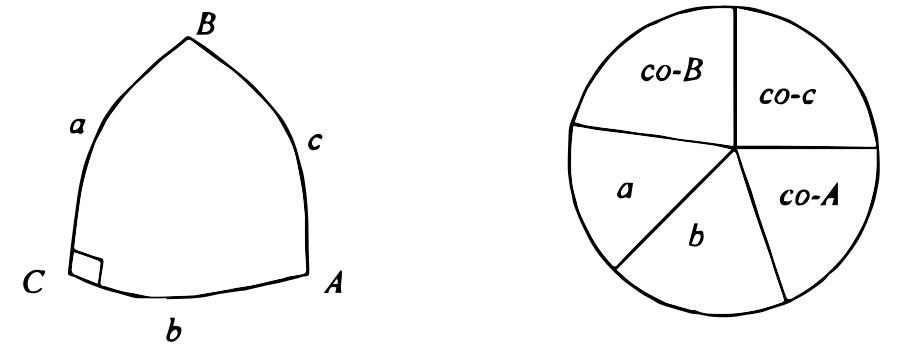
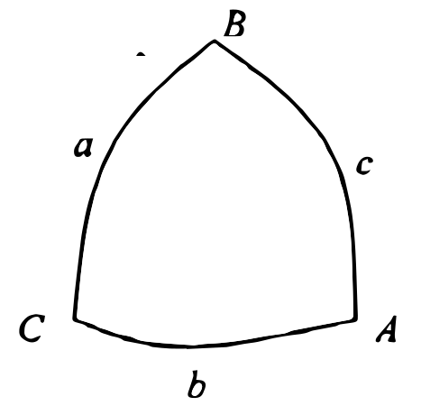
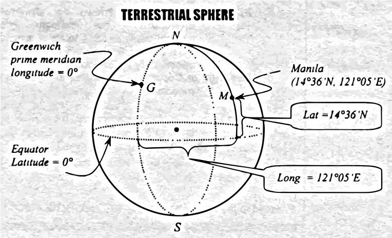

Spherical Trigonometry concerns with triangles extracted from the surface of a sphere.
Solution to right triangles:

To solve a right triangle, draw a circle with 5 parts. The 5 parts corresponds to the 3 sides and 2 angles of the triangle (excluding the 90$^\circ$ angle). Then apply Napier's rules:
Rule 1: (Tan-Ad rule)
"The sine of any middle part is equal to the product of the tangent of the adjacent parts."
Rule 2: (Co-Op rule)
"The sine of any middle part is equal to the product of the cosine of the opposite parts."
Any of the 5 parts can be the middle part. For example, if "a" is the middle part, then "co-B" and "b" are the adjacent parts and "co-c" and "co-A" are the opposite parts, thus
$$\eqalign{
& \sin a = \tan (\text{co B})\tan b \cr
& \text{but}\ \ \ \tan (\text{co-B}) = \cot B,\ \sin a = \cot B\tan b \cr} $$
$$\eqalign{
& \sin a = \cos (\text{co c})\cos (\text{co A}) \cr
& \text{but}\ \ \cos (co - c) = \sin c \cr
& \cos (co - A) = \sin A\ \ \ \ \ \sin a = \sin c\sin A \cr}$$
Solution to oblique triangles:
Law of sines

$${{\sin a} \over {\sin A}} = {{\sin b} \over {\sin B}} = {{\sin c} \over {\sin C}}$$
Law of cosines for the sides
$$\eqalign{
& \cos a = \cos b\cos c + \sin b\sin c\cos A \cr
& \cos b = \cos a\cos c + \sin a\sin c\cos B \cr
& \cos c = \cos a\cos b + \sin a\sin b\cos C \cr} $$
Law of cosines for the angles
$$\eqalign{
& \cos A = - \cos B\cos C + \sin B\sin C\cos a \cr
& \cos B = - \cos A\cos C + \sin A\sin C\cos b \cr
& \cos C = - \cos A\cos B + \sin A\sin B\cos c \cr} $$
Area of the spherical triangle:
$$A = {{\pi {R^2}E} \over {180}}$$
where: $E=\text{spherical excess in degrees}=(A+B+C)-180^\circ$

Terrestrial Sphere:
Important constants:
Radius of the earth = 3959 miles
1 minute of the great circle area on the surface of the earth = 1 NM
1 NM (nautical mile) = 6080 feet
1 statute mile = 5280 feet
Important terms:
North & South poles - are the poles of the earth which are on its axis.
Equator - an imaginary line passing through the center of the earth and perpendicular to the axis of the earth.
Parallels or Latitudes - are curves parallel to the equator. Latitude of a point is the smallest angle formed between the radius from the point to the Earth's center an the plane of the equator. It is measured from 0$^\circ$ to 90$^\circ$ North or South.
Meridians or Longitudes - are curves perpendicular to the equator. Longitude of a point is the angle between the plane of its meridian and the plane of the Greenwich meridian. It is measured from 0$^\circ$ to 180$^\circ$ East or West. Meridians are all great circles while parallels are not unless it is at the equator.
Prime meridian (also known as Greenwich meridian) - the meridian agreed internationally in 1864 to be of longitude 0$^\circ$. It passes through the former London observatory at Greenwich.
Bearings or Courses - are angles formed withn the meridian.